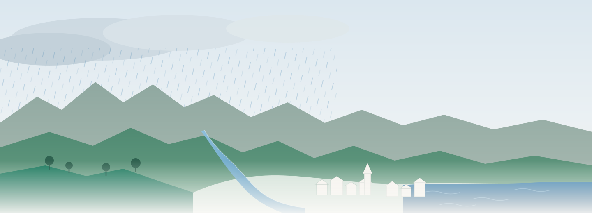

A digital twin of Ireland
A warmer atmosphere holds more water, warmer oceans expand, and glaciers and ice sheets are giving theirs up to the sea. Ireland meets that global shift as a local one: wetter winters, heavier bursts of rain, higher tides behind the storms. DigiÉire builds a digital twin of Ireland — underpinned by a dynamic agent-based model of its population — to ask which adaptation choices leave people living better as the water rises, out to 2100.
The wellbeing index against the climate record, a window around any storm or wet period you pick off the rainfall series, and the distributions behind every number. It runs entirely in your browser.
Collaboration
Technical University of Denmark.
Acknowledgements
For supporting access to the Meta Content Library, the source of the public discourse the wellbeing measurement is built on.
For maintaining and publishing Ireland’s catalogue of past flood events at floodinfo.ie — the record that lets a model of future flooding be checked against what has already happened.
For the computational resources on which the scoring models were trained and the corpus scored — Luxembourg MeluXina (LuxProvide) and the Irish Centre for High-End Computing.
For computational resources.